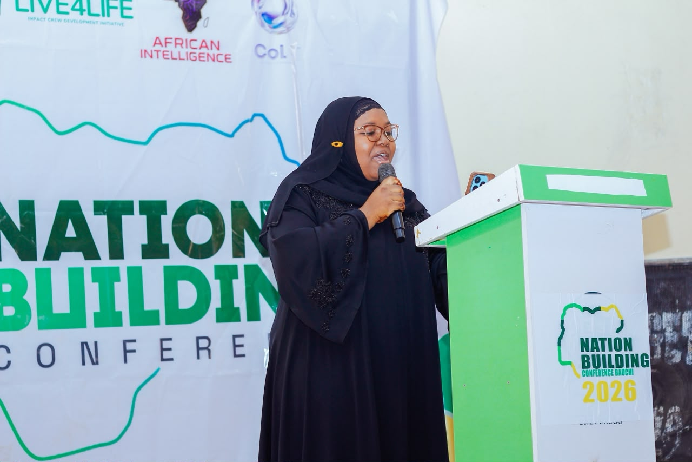
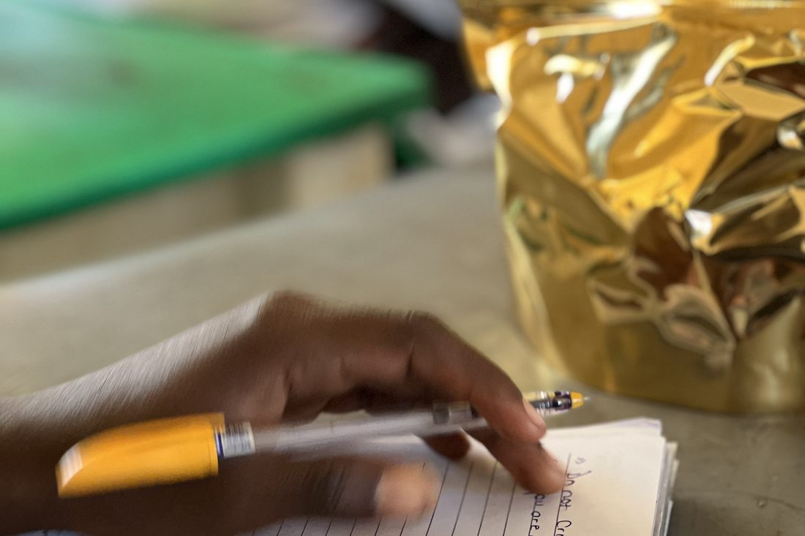

Impact
We count people, not attendance
A full hall proves very little. The only question that matters is whether a young person’s life is different a few years later — so we set a baseline when they join us, and we keep following up.
The launch, in numbers
What 7 November actually produced
- Elected, not appointed. Twelve officers chosen by secret ballot of all forty-five members, with three offices reserved for students below the senior class so that the youngest are not spectators.
- Written down, not remembered. The House adopted standing orders it had argued over, keeps minutes open to any student in the school, and passed its first resolution on motions the students wrote themselves.
- Standing, not one-off. Four committees left the launch with named chairs and a first task to report on. Every delegate holds signed parental consent, and the House already has a date for its next sitting.
- Self-funded. Everything since the 2023 campaign — the conferences, the parliament, the materials — has been paid for by the team itself. We have not asked anyone to fund a promise.



What it looks like
Most of it is unglamorous
A notebook, an argument worked through to the end, a decision written down so somebody can be held to it next term. None of this photographs well. All of it is the point.
Before that
What else we have done
Nation Building Conferences
Convening students inside their own institutions and challenging them to take responsibility for the country they are about to inherit. This is how most of our young people first meet us.
Trades, income and a way back
We equipped 30 young people whose lives had been derailed by substance use with employable skills in shoemaking, soap making and baking, and with an income of their own. Skills were the visible part. Being received back by their communities with dignity was the point.
Against voter apathy
Funded by a $1,000 Nigeria Youth Futures Fund grant. Young people we worked with walked into INEC offices and collected their permanent voter cards. It moved them once — which is exactly what taught us an institution was missing.
Where it started
A $250 grant out of LEAP Africa’s Youth Leadership Development Programme funded skills workshops in Jos for young people at risk of drug abuse. Everything since has been a step away from one-off help and towards something that lasts.
How we measure
What we follow, and for how long
Global goals
Where our work sits
We name only the goals we actually report against.
A student who chairs a committee at fifteen arrives at university already knowing what a quorum is, and why it matters.
That is the whole design.